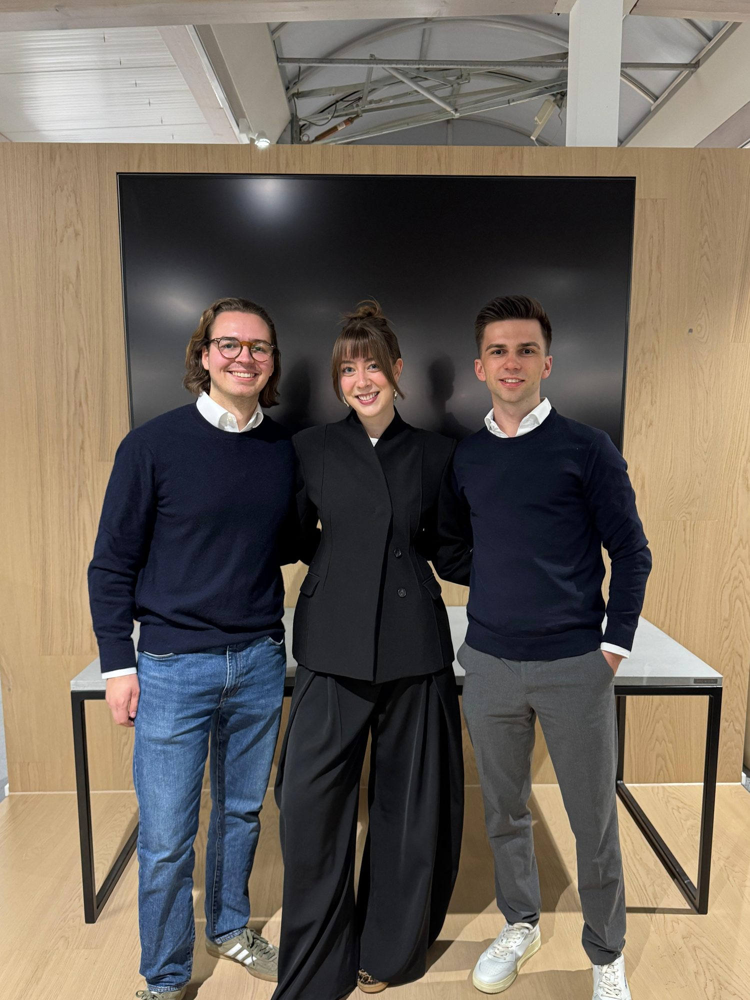

Unternehmertum erleben.
Nachmittag, Abend, dazwischen die Leute, die hier wirklich etwas bewegen. Speaker mit echten Geschichten. Netzwerken, wie es sein soll – ohne Getue. Und wenn die Vorträge vorbei sind? Musik, kühle Getränke, Gespräche bis spät. Wahrscheinlich das größte Unternehmer-Event, das das Sauerland zu bieten hat. Ob du gründest, führst, mal übernimmst oder einfach neugierig bist: hierher gehörst du.
Einmal im Jahr wird aus unserem monatlichen Netzwerk etwas Größeres. Ein Nachmittag, ein Abend, ein Ort – das Alte Sägewerk. Der YBS Summer Summit, das ist Unternehmertum zum Anfassen. Nicht auf Hochglanz poliert, nicht bloß auf dem Papier. Sondern echt, und mittendrin.
Los geht's mit Impulsvorträgen. Von Leuten, die hier tatsächlich etwas aufgebaut haben, keine Bühnenprofis, sondern Praktiker. Danach wird geredet, gelacht, genetzwerkt – auf Augenhöhe, ohne Schlips-Zwang. Und wenn die Sonne tiefer steht, kommen Foodtruck, kalte Getränke und Musik dazu. Bodenständig. Sauerländisch. Trotzdem mit Anspruch.
Eins noch, und das ist uns wichtig: Hier verdient niemand mit. Der ganze Summit entsteht komplett ehrenamtlich – in Feierabenden, an Wochenenden, aus Überzeugung. Weil wir glauben, dass ein starkes Netzwerk die Region weiterbringt. Punkt.
Impulse, die hängen bleiben. Austausch mit Leuten, die dieselben Sorgen kennen. Und Kontakte, die im Alltag wirklich tragen – nicht nur auf der Visitenkarte.
Übergabe ist kein Selbstläufer. Hier hörst du von denen, die es schon durchgemacht haben – ehrlich, über die Chancen und über die Stolpersteine, die sonst keiner ins Schaufenster stellt.
Sichtbar werden. Sparringspartner finden. Und ein Netzwerk im Rücken haben, das beim nächsten Schritt den Unterschied macht – manchmal reicht ein einziges gutes Gespräch.
Kein Unternehmen? Kein Problem. Neugier reicht völlig. Wer zuhören, mitreden und etwas mitnehmen will, ist hier goldrichtig – und geht garantiert nicht mit leeren Händen nach Hause.
Kein Minutentakt, kein straffes Korsett. Eher ein roter Faden – und dazwischen jede Menge Raum für die Gespräche, für die man eigentlich kommt.
Türen auf. Das Alte Sägewerk füllt sich, das erste Getränk in der Hand, die ersten Gespräche – und diese Stimmung, wenn ein Abend gerade erst anfängt.
Bühne frei. Unsere Speaker erzählen – von Nachfolge, von Unternehmertum, davon, was gestandene Betriebe sich bei Startups abschauen können. Kein Frontalunterricht, sondern Geschichten aus dem echten Leben.
Der eigentliche Kern. Menschen treffen, Kontakte knüpfen, voneinander lernen – oft passiert genau hier das, wovon man am nächsten Tag noch erzählt.
Und dann? Streetfood aus dem GOODFOOD Foodtruck, kalte Drinks, Musik. Der Teil des Abends, an dem aus Kontakten Bekannte werden. Manchmal mehr.
Zwei Unternehmer, zwei Blickwinkel, eine Region. Tipp auf einen Speaker – dann erfährst du mehr.
+ Und da geht noch was: Ein dritter Speaker ist in Planung. Wer? Verraten wir bald.

Ums Essen kümmert sich der GOODFOOD Foodtruck aus Meschede. Ehrliches Streetfood, frisch, direkt vor Ort aus der Klappe gereicht – nichts Aufgewärmtes, nichts Kompliziertes. Genau das, was ein langer Sommerabend im Alten Sägewerk braucht.
Klartext zum Preis: Was dein Ticket kostet, fließt 1:1 ins Catering. Kein Cent bleibt bei uns hängen. Der Summit ist ehrenamtlich – uns geht's ums Netzwerk, nicht um Marge.
Dein Platz beim YBS Summer Summit 2026 – sicher ihn dir. Der Verkauf läuft bequem über ticket.io, gleich hier auf der Seite.
Voller Zugang zum Summit – Vorträge, Networking, Party. Catering vom GOODFOOD Foodtruck ist drin, Getränke gibt's vor Ort.
Gleicher Abend, kleinerer Preis. Gültigen Ausweis am Einlass nicht vergessen. Catering? Selbstverständlich auch inklusive.
Sichere Bezahlung und Ticketversand laufen direkt über ticket.io. Und zur Erinnerung: Der Ticketpreis fließt ins Catering – Gewinn machen wir damit keinen.
Ohne die Unternehmen aus der Region – kein Abend. So einfach ist das. Danke dafür.


Du willst dabei sein und den Summer Summit mittragen? Werde Sponsor →

Der Summer Summit? Unser Herzensprojekt. Wir stecken viele Abende, viele Wochenenden, viel Herzblut hinein – ehrenamtlich, jedes Mal. Weil wir eben daran glauben: Wenn Menschen aus der Region zusammenkommen, entsteht etwas, das größer ist als jeder Einzelne.
Also: Kommt vorbei. Bringt eure Neugier mit, eure Fragen, eure Geschichten. Und lasst uns zusammen einen Abend bauen, über den man im Sauerland noch lange redet. Bis September!